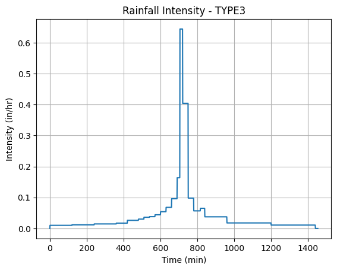

# Script to generate a simulated raingage datafile
import pandas as pd
from io import StringIO
# Sample cumulative rainfall input (time in hours, depth in mm)
sample_data = """# Time Depth
0.0 0.00
3.9 1.20
7.0 2.40
10.0 3.00
11.0 3.00
"""
# Read into DataFrame
df = pd.read_csv(StringIO(sample_data), comment="#", sep=r"\s+", names=["time_hr", "depth_mm"])
# Convert time (hours) to datetime starting from a defined origin
origin = pd.Timestamp("2025-01-01 00:00:00")
df["timestamp"] = origin + pd.to_timedelta(df["time_hr"], unit="h")
# Reorder columns for clarity
df = df[["timestamp", "time_hr", "depth_mm"]]
# Save to external CSV file
output_filename = "generated_rainfall_data.csv"
df.to_csv(output_filename, index=False)
print(f"✅ File saved: {output_filename}")
✅ File saved: generated_rainfall_data.csv
# Script to generate 1-minute hyetographs
import numpy as np
import pandas as pd
import matplotlib.pyplot as plt
from scipy.interpolate import interp1d
hyetType = 'type3'
PT = 1.0 # total depth
#######################################
hour = [0,2,4,6,7,8,8.5,9,9.5,9.75,10,10.5,11,11.5,11.75,12,12.5,13.0,13.6,14,16,20,24,48]
minutes = [i*60 for i in hour]
hyets = {
'type1': [0,0.035,0.076,0.125,0.156,0.194,0.219,0.254,0.303,0.362,0.515,0.583,0.624,0.654,0.669,0.682,0.706,0.727,0.748,0.767,0.83,0.926,1,1],
'type1A': [0,0.05,0.116,0.206,0.268,0.425,0.48,0.52,0.55,0.564,0.577,0.601,0.624,0.645,0.655,0.664,0.683,0.701,0.719,0.736,0.8,0.906,1,1],
'type2': [0,0.022,0.048,0.08,0.098,0.12,0.133,0.147,0.163,0.172,0.181,0.204,0.235,0.283,0.357,0.663,0.735,0.772,0.799,0.82,0.88,0.952,1,1],
'type3': [0,0.02,0.043,0.072,0.089,0.115,0.13,0.148,0.167,0.178,0.189,0.216,0.25,0.298,0.339,0.5,0.702,0.751,0.785,0.811,0.886,0.957,1,1],
'user': [0,0,0.4285,0.8571,1.0,1.0,1.0,1.0] # Adjust time scaling below if needed
}
if hyetType == 'user':
user_time = [0,7,8,9,9.3333,10,24,48]
minutes = [i*60 for i in user_time]
hyet = hyets['user']
else:
hyet = hyets.get(hyetType)
f = interp1d(minutes, hyet, kind='linear')
t24 = np.arange(0, 1455) # 48 hours in minutes
depth = PT * f(t24) # Scaled cumulative rainfall depth
intensity = np.diff(np.insert(depth, 0, 0)) * 60 # in/hr
# Build DataFrame ########################################
df = pd.DataFrame({
"Time (min)": t24,
"Cumulative Depth (in)": depth,
"Intensity (in/hr)": intensity
})
# Optionally, write every nth row (e.g., every 15 minutes)
n = 15
df_thinned = df.iloc[::n]
# Save to CSV ##########################################################
df_thinned.to_csv(f"interpolated_output_{hyetType.upper()}.csv", index=False)
##########################################################################
# Optional plot (for visual inspection)
plt.plot(t24, intensity)
plt.title(f"Rainfall Intensity - {hyetType.upper()}")
plt.xlabel("Time (min)")
plt.ylabel("Intensity (in/hr)")
plt.grid(True)
plt.show()

# Python port of FORTRAN program to interpolate rain/runoff data to 1-minute intervals
def interpolate_rainfall(input_lines):
etime = []
acc_wtd_value = []
# Read and parse data
for line in input_lines:
line = line.strip()
if line.startswith("#") or len(line.strip()) == 0:
continue
parts = line.split()
if len(parts) == 2:
etime.append(float(parts[0]))
acc_wtd_value.append(float(parts[1]))
# Round time to nearest whole minute
for i in range(1, len(etime)):
etime[i]=round((etime[i]+0.1)*60.0,0) # round to nearest whole number as float
# Interpolate values
interpolated = []
for i in range(1, len(etime)):
t0, t1 = etime[i - 1], etime[i]
v0, v1 = acc_wtd_value[i - 1], acc_wtd_value[i]
# print(t0,t1,v0,v1)
slope = (v1 - v0) / (t1 - t0)
rtime = t0
while rtime < t1:
value = v0 + slope * (rtime - t0)
interpolated.append((round(rtime, 6), round(value, 6)))
rtime += 1.0
return interpolated
if __name__ == "__main__":
# Example input: could be replaced with reading from a file
sample_data = """# Time Depth
0.0 0.0
2.0 0.02
4.0 0.043
6.0 0.072
7.0 0.089
8.0 0.115
8.5 0.13
9.0 0.148
9.5 0.167
9.75 0.178
10.0 0.189
10.5 0.216
11.0 0.25
11.5 0.298
11.75 0.339
12.0 0.5
12.5 0.702
13.6 0.751
13.5 0.785
14.0 0.811
16.0 0.886
20.0 0.957
24.0 1.0
24.1 1.0
"""
# Remember to pad the data so last line is one minute more that actual last line of data
lines = sample_data.strip().split("\n")
print(lines)
results = interpolate_rainfall(lines)
import pandas as pd
n = 15
df = pd.DataFrame(results, columns=["Time (min)", "Interpolated Value"])
df_thinned = df.iloc[::n] # selects every n-th row starting from 0
df_thinned.to_csv("interpolated_output_TypeIII_thinned.csv", index=False)
print("Saved interpolated data to interpolated_output.csv")
print(df_thinned)
['# Time Depth', '0.0 0.0', '2.0 0.02', '4.0 0.043', '6.0 0.072', '7.0 0.089', '8.0 0.115', '8.5 0.13', '9.0 0.148', '9.5 0.167', '9.75 0.178', '10.0 0.189', '10.5 0.216', '11.0 0.25', '11.5 0.298', '11.75 0.339', '12.0 0.5', '12.5 0.702', '13.6 0.751', '13.5 0.785', '14.0 0.811', '16.0 0.886', '20.0 0.957', '24.0 1.0', '24.1 1.0']
Saved interpolated data to interpolated_output.csv
Time (min) Interpolated Value
0 0.0 0.000000
15 15.0 0.002381
30 30.0 0.004762
45 45.0 0.007143
60 60.0 0.009524
... ... ...
1395 1389.0 0.989788
1410 1404.0 0.992475
1425 1419.0 0.995162
1440 1434.0 0.997850
1455 1449.0 1.000000
[98 rows x 2 columns]